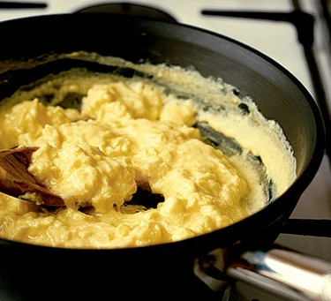

Scramble Egggggggg

Learn how to make perfect scrambled eggs with this easy recipe. A quick breakfast packed with protein, courtesy of Bill Granger.
Ingredients
Steps
-
Lightly whisk 2 large eggs, 6 tbsp single cream or full cream milk and a pinch of salt together until the mixture has just one consistency.
Heat a small non-stick frying pan for a minute or so, then add a knob of butter and let it melt. Don’t allow the butter to brown or it will discolor the eggs.
-
Pour in the egg mixture and let it sit, without stirring, for 20 seconds. Stir with a wooden spoon, lifting and folding it over from the bottom of the pan. Let it sit for another 10 seconds then stir and fold again.
-
Repeat until the eggs are softly set and slightly runny in places. Remove from the heat and leave for a moment to finish cooking. Give a final stir and serve the velvety scramble without delay.
Back to menu